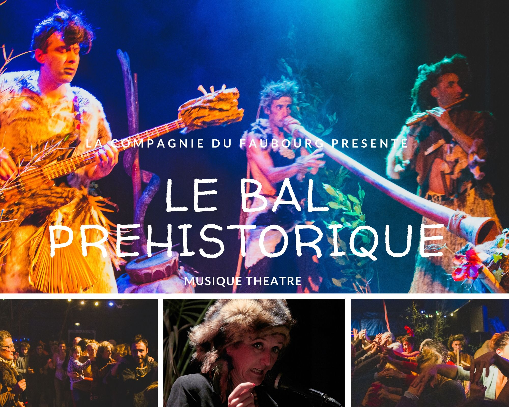
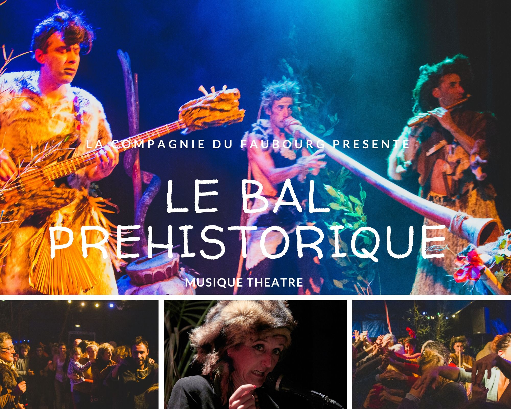

Le Néanderbal
Bal préhistorique
 



Présentation
Le Néanderbal, danses de l'après histoire (bal préhistorique)
4 musiciens tout droit venus des temps préhistoriques viennent partager leurs rituels ancestraux, avec percussions, flûtes, didjeridoo et basse. Une conteuse contemporaine les accompagne.
En les écoutant, il vous semblera reconnaître la bourrée à deux temps, le slow, le métal, le free jazz ou le hip hop. Vous réaliserez alors à quel point leur musique est la source de nos courants actuels!
Le Néanderbal est une invitation au voyage, un bal d'initiation aux danses originelles, basé sur une théorie de la préhistoire loufoque et onirique, un concert qui vous propose de vivre une expérience physique, ravivant votre mémoire animale et vos pulsions célestes.
Une occasion pour les danseurs de revenir à la joie pure d'être ensemble sur la terre.
Informations techniques
Esprit & Intention
Entre récit fictif proto-historique et pulsations organiques, le bal construit un pont ludique entre imaginaires archaïques et formes musicales contemporaines identifiables. Le public est invité à entrer dans la ronde, à sentir, à transposer, à relier.
Le cadre reste souple : écoute, initiation aux codes de danse, bascule collective, montée rituelle.
L'équipe
Merry Benoit
Musicien basse, musique éléctronique, régie technique
Richard Gagliano
Percussionniste
Stephane Dumas
Flutiste, instrumentiste a vent